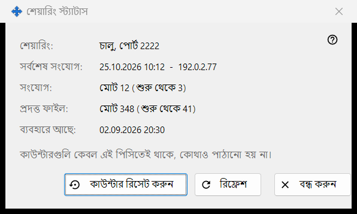
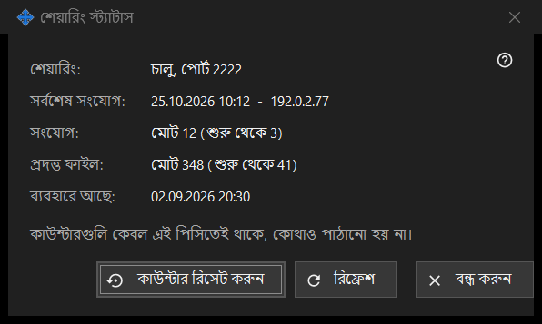

শেয়ারিং স্ট্যাটাস
এটি কীসের জন্য
শেয়ারিংয়ের বর্তমান অবস্থা এবং তার সহজ কাউন্টার দেখায়। এটি মূল উইন্ডোর পরিসংখ্যান লিংক থেকে খোলে।


এই ক্রমে
- উপরে অবস্থা পড়ুন।
- সর্বশেষ সংযোগ, সংযোগের সংখ্যা এবং পরিবেশিত ফাইল দেখুন।
- নতুন মান পেতে রিফ্রেশ চাপুন।
- গণনা নতুন করে শুরু করতে কাউন্টার রিসেট করুন চাপুন।
- বন্ধ করুন চাপুন।
উপাদানসমূহ
অবস্থা
শেয়ারিং: জানায় শেয়ারিং চলছে কি না এবং কোন পোর্টে, অথবা এটি বন্ধ, অথবা ওয়ার্কার পাওয়া যাচ্ছে না। ব্যবহারে আছে: দেখায় শেয়ারিং কখন শুরু হয়েছে।
কাউন্টার
সর্বশেষ সংযোগ: সর্বশেষ ফোনের সময় দেখায়, বা এখনও হয়নি। সংযোগ: ও প্রদত্ত ফাইল: মোট সংখ্যা দেখায় এবং বন্ধনীর মধ্যে শেষবার চালু হওয়ার পর থেকে সংখ্যা। কাউন্টার শুধু এই পিসিতে রাখা হয় এবং কোথাও পাঠানো হয় না।
রিফ্রেশ ও রিসেট
রিফ্রেশ সার্ভার থেকে আবার মান পড়ে। কাউন্টার রিসেট করুন আগে জিজ্ঞেস করে: আগের মান ফিরিয়ে আনা যায় না। রিসেট ব্যর্থ হলে বোতামে রিসেট ব্যর্থ হয়েছে দেখায়। বন্ধ করুন উইন্ডো ছেড়ে যায়।
ম্যানেজার সেটিংস · SFTP শেয়ারিং সেটিংস · এক্সচেঞ্জ সার্ভার সেটিংস